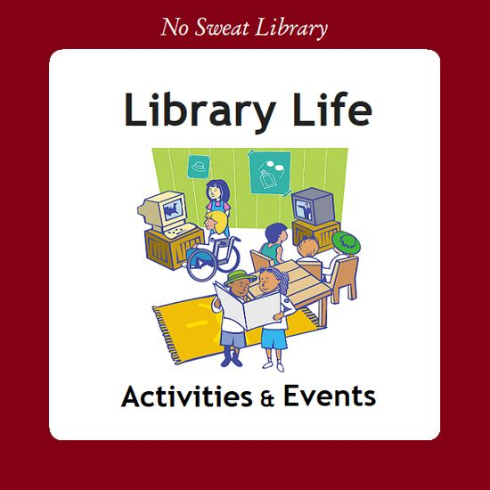
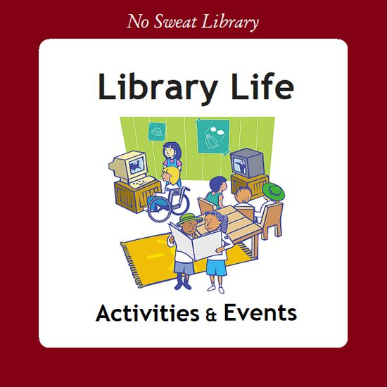

A person born into a low income, rural family in India struggles to aspire to study at an IIT or aim to be selected into the IAS. This is true in many cases. The reason for this is because they start with many inherent disadvantages such as:
The management of the university is headed by the distinguished academician and able academic administrator, Prof. M. Vijaya Kumar as the Vice-Chancellor (FAC) chartering the university on the indelible legacy left by the earlier Vice-Chancellors Prof. V. Raj Kumar and Prof. V. Ramachandra Raju. The leaderships of the university is successful in finding benevolent, learner centered and committed academicians to head the four campus institutes of the university:
 
